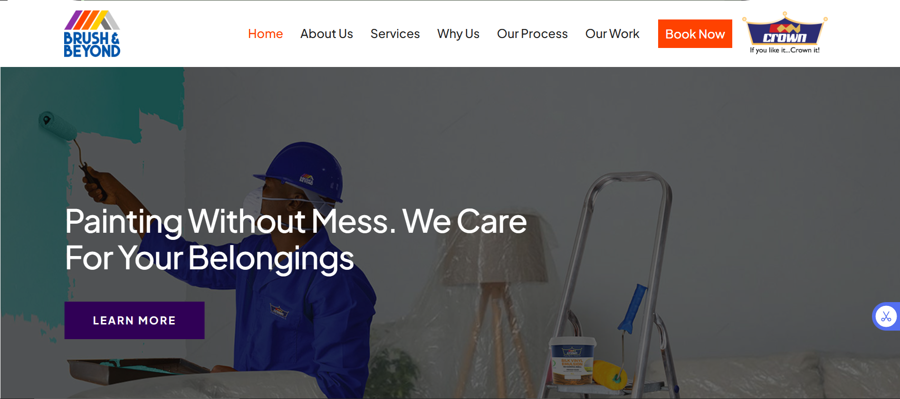
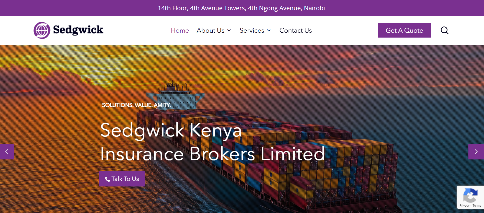
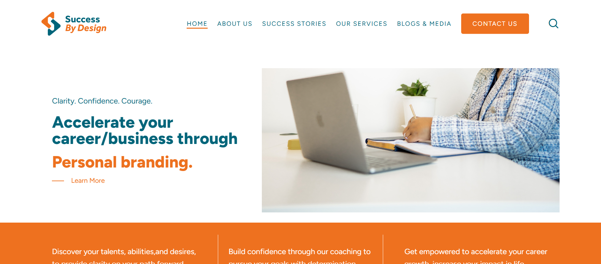
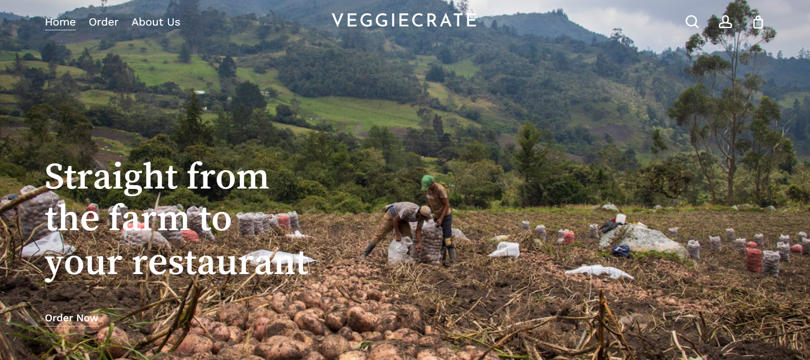
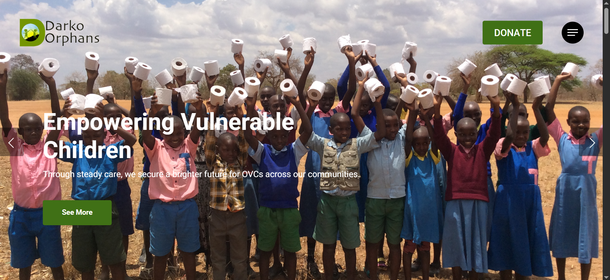

Featured Projects

Brush and Beyond
Skills Used: WordPress Theme Customization, Responsive Web Design, UI Implementation, Plugin Integration, Cross-Browser Testing.
Go liveBrush & Beyond is a dynamic, campaign-driven website created to promote Crown Paints'
wide range of products, blending creativity and commercial appeal. The site was aimed
at driving engagement through vibrant visuals and structured messaging.
My contributions while at Kapu Digital Limited included:
-Custom design and theme customization in WordPress to match Crown’s brand identity.
-Implementing responsive layouts with HTML and CSS to ensure seamless performance on all devices.
-Integrating gallery and contact plugins to support product discovery and customer inquiries.
-Optimizing website performance for fast loading and smooth browsing.
-Conducting thorough cross-browser testing to ensure consistency.
-Collaborating with designers and project managers to deliver on campaign goals.
This project allowed me to bring a creative, campaign-focused vision to life through tailored WordPress development.

Sedgwick
Skills Used: WordPress Content Management, Layout Structuring, Responsive Design, SEO Optimization, Accessibility Practices.
Go liveSedgwick is a global insurance and claims management company. The corporate website project
was centered around establishing digital credibility, improving content structure, and making service information
easy to access.
My key contributions during the internship included:
-Assisting in the migration and restructuring of content within WordPress to enhance clarity and trust.
-Customizing templates and building responsive sections using HTML, CSS, and page builders.
-Enhancing the site’s navigation and user flow to ensure accessibility for a broad user base.
-Setting up plugins for compliance and performance enhancements.
-Implementing SEO basics to improve online visibility.
-Supporting revisions and updates based on client feedback.
Working on Sedgwick’s website gave me real-world experience in building formal, trust-centered digital experiences for enterprise clients.

Success By Design
Skills Used: WordPress Frontend Development, Content Layout Planning Form Integration, Mobile Responsiveness, Performance Optimization.
Go liveSuccess By Design is a personal growth and coaching platform built to help individuals
maximize their potential through tailored mentorship and training programs. The site reflects
the brand's uplifting mission and thoughtful approach.
As part of the development team at Kapu Digital Limited, I:
-Designing and structuring the frontend using WordPress, HTML, and CSS.
-Built responsive page layouts to present content clearly across all devices.
-Integrated plugins for blog functionality, contact forms, and easy content updates.
-Helped shape the site's content flow and tone, aligning it with the brand’s message of empowerment.
-Worked closely with the content and design teams to ensure visual harmony and brand consistency.
-Ensured the site was optimized for speed, usability, and future scalability.
This project let me take a hands-on role in creating a mission-driven website that inspires and informs.

VeggieCrate
Skills Used: WordPress Frontend Development, Content Layout Planning Form Integration, Mobile Responsiveness, Performance Optimization.
VeggieCrateis a full website I designed and developed for a local produce delivery business
specializing in Irish potatoes and fresh vegetables. The goal was to create a simple, clean,
and functional online presence that allows the business to reach wholesale and retail customers efficiently.
Key Features:
-Fully responsive design for both desktop and mobile users
-Clear product presentation with focus on bulk orders and grading options
-Easy-to-navigate structure with clear call-to-actions (Order Now, Contact, Custom Orders)
-Informative sections such as About Us, Vision & Mission, Delivery Schedule, and FAQs
-Off-canvas mobile menu for a smooth navigation experience
-SEO-friendly structure to help the business gain online visibility
-Custom content that tells the business story, highlights the farm-to-door concept, and builds customer trust
The website provides VeggieCrate with a professional digital presence that supports its growth, simplifies customer communication,
and showcases its brand values clearly. It is designed to easily expand as the business adds more vegetables and services.

Darko Orphans
Skills Used: WordPress Frontend Development, Content Layout Planning Form Integration, Mobile Responsiveness, Performance Optimization.
Darko Orphans is a designed and developed website, a non-profit organization dedicated
to supporting vulnerable children through education, empowerment, clean water, feeding programs,
and sponsorship opportunities. The aim was to create a compassionate, engaging,
and user-friendly online presence that communicates the mission clearly while encouraging support and involvement.
Key Features:
-Fully responsive design for desktop and mobile
-Clear calls-to-action (Donate, Sponsor, Get Involved)
-Dedicated program pages highlighting core initiatives
-Inspiring visuals and transformation stories
-SEO-friendly structure for global reach
The website provides Darko Orphans with a professional digital presence that strengthens its mission,
simplifies supporter engagement, and clearly shares its impact. It is designed to grow with the organization as more programs,
stories, and partnerships are added.